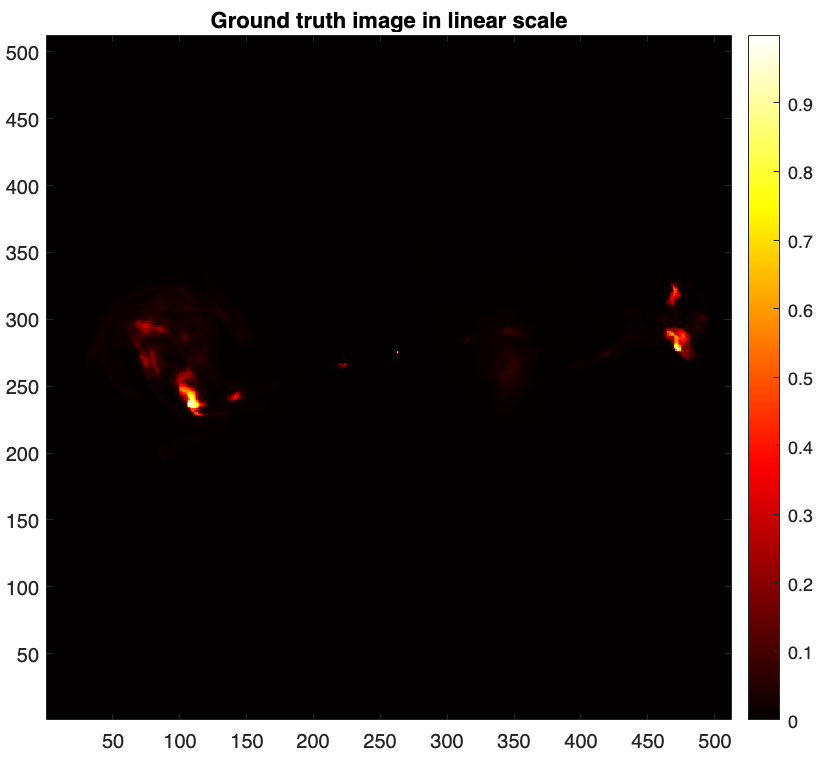
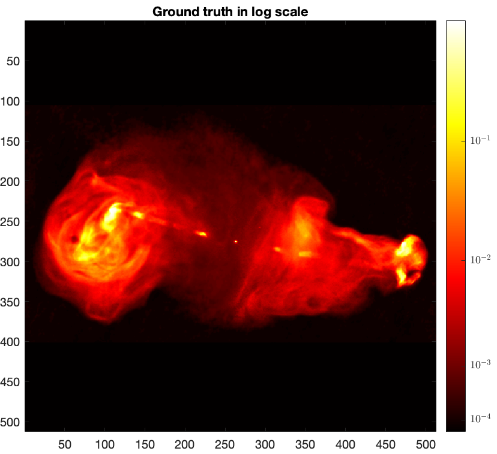
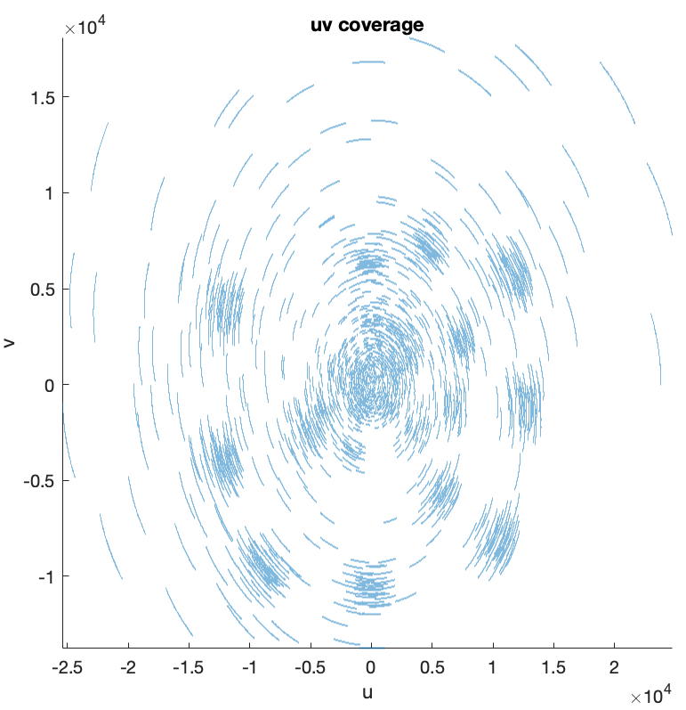
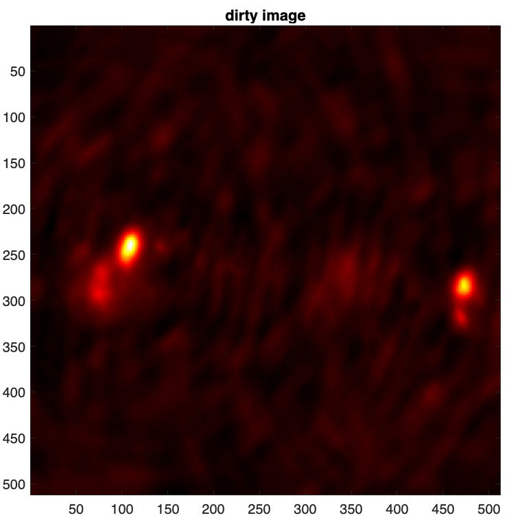
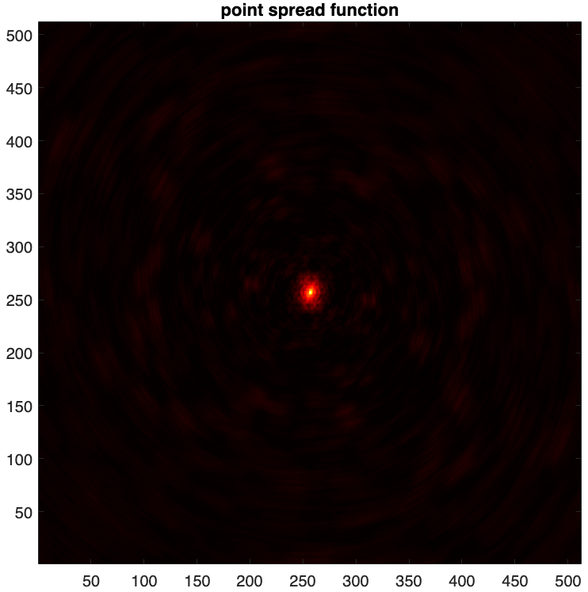
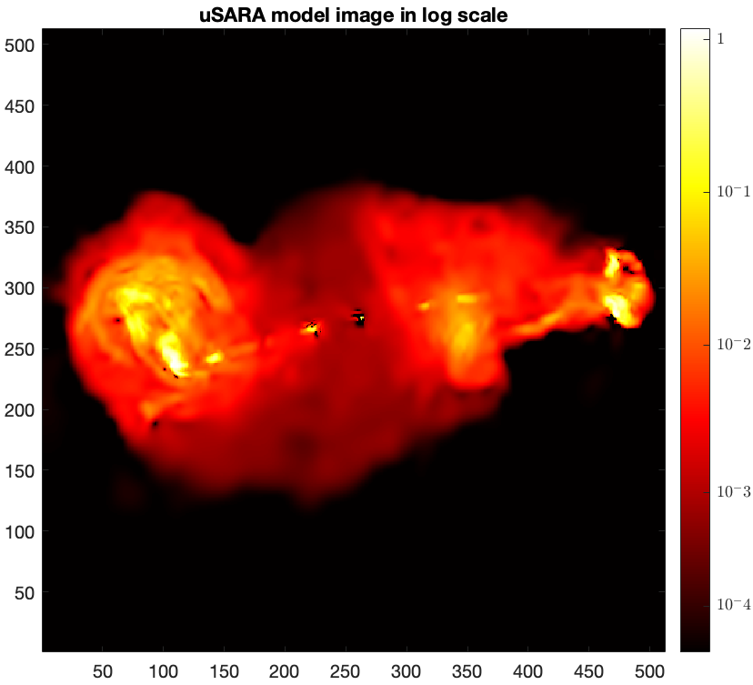
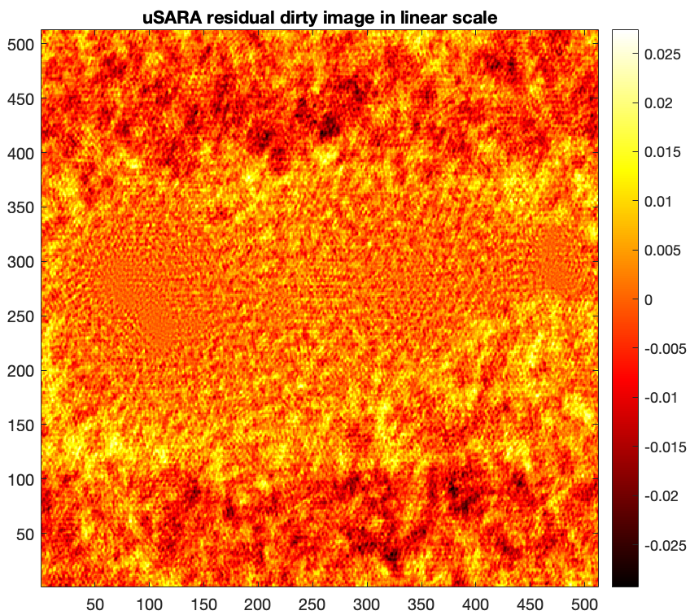

uSARA Tutorial
Imaging with uSARA
Unconstrained Sparsity Averaging Reweighted Analysis algorithm, dubbed as uSARA, is the unconstrained
counterpart of the SARA algorithm for synthesis imaging by interferometry (SII).
uSARA promotes a handcrafted sparsity regularisation and is underpinned by the forward-backward
algorithmic structure from optimisation theory. The details of uSARA are discussed in the following
papers.
[1] Repetti, A., & Wiaux, Y., A forward-backward algorithm for reweighted procedures:
Application to radio-astronomical imaging. IEEE ICASSP 2020, 1434-1438, 2020.
[2] Terris, M., Dabbech, A., Tang, C., & Wiaux, Y., Image reconstruction algorithms in radio interferometry:
From handcrafted to learned regularization denoisers. MNRAS, 518(1), 604-622.
[3] Wilber, A. G., Dabbech, A., Jackson, A., & Wiaux, Y., Scalable precision wide-field imaging in
radio interferometry: I. uSARA validated on ASKAP data. MNRAS, 522(4), 5558-5575, 2023.
In this tutorial, we focus on a MATLAB implementation of uSARA for small-scale monochromatic intensity imaging in SII, from the environment setup to imaging.
SII Inverse Problem
The imaging inverse problem in SII can be formulated as:
\[
{\boldsymbol{y}} = {\boldsymbol{\Phi} {\boldsymbol{\bar{x}}} + \boldsymbol{n}}
\]
where \(\boldsymbol{y} \in \mathbb{C}^M\) is the measurement vector,
\(\boldsymbol{\bar{x}} \in \mathbb{R}^N\) is the unknown radio image,
\(\boldsymbol{\Phi} \in \mathbb{C}^{N \times M}\) is the measurement operator corresponding to
incomplete Fourier sampling, and \(\boldsymbol{n} \in \mathbb{C}^M\) is s a realisation of a random
Gaussian noise with standard deviation \(\tau\) and mean 0.
uSARA aims to recover the unknown \(\boldsymbol{\bar{x}}\) from the measurements \(\boldsymbol{y}\).
uSARA's iteration structure
uSARA is underpinned by the forward-backward (FB) algorithmic structure from optimisation theory. The FB iteration structure takes a two-step update: a forward step enforcing data fidelity, followed by a backward denoising step promoting the SARA regularisation.
\[
\boldsymbol{x}_{i+1} = \text{prox}_{\gamma g} \left(\boldsymbol{x}_i - \delta \boldsymbol{\Phi}^\dagger (\boldsymbol{\Phi} \boldsymbol{x}_i - \boldsymbol{y})\right),
\]
where \(\boldsymbol{\Phi}^\dagger\) is the adjoint of the measurement operator. The function \(g\) represents the SARA regularisation, and \(\gamma\) the regularization parameter that is a trade-off between the data fidelity term and the regularisation term.
\(\delta > 0\) is a step size satisfying \(\delta < \frac{2}{\|\boldsymbol{\Phi}\|_S^2}\) for convergence, with \(\|\cdot\|_S\) standing for the spectral norm of its argument operator (computed using the power method). In our implementation, \(\delta\) is set to \(\delta = \frac{1.98}{\|\boldsymbol{\Phi}\|_S^2}\) (the user is not encouraged to tune this parameter).
The choice of the regularisation parameter \(\gamma\) is important. When \(\gamma\) is too large, the
reconstructed image can be smooth. In the opposite case, it can be grainy and noisy.
In [2], we proposed to link the regularisation parameter to the estimated image-domain noise level
\(\sigma\), which can be estimated from the measurement operator as: \(\sigma = \frac{\tau}{\sqrt{2\|\boldsymbol{\Phi}\|_S^2}}\). Our heuristic stipulates to set \(\gamma\) such that the soft-thresholding parameter involved in the uSARA denoiser satisfies \(\gamma \delta = \sigma\).
Generally, this heuristic has shown to be effective both in simulation [2] and on real data [3]. However, in some cases an adjustment of its value - within one order of magnitude - may be necessary for best results. The user is given the handle to tune the adjusting factor (set to 1 by default, i.e. adjustment is disabled) if needed. Readers can refer to this README for more details.
Clone Repository
You can clone the repository to the current directory by running the command below.

!git clone --recurse-submodules https://github.com/basp-group/uSARA.git cd ./uSARA
The flag "--recurse-submodules" is required to clone the sub-modules RI-measurement-operator and SARA-dictionary.
Dependencies
The repository requires a MATLAB version higher than R2019b. The script below looks for the required toolboxes.
list_tb = matlab.addons.installedAddons().Name; if ~ismember(list_tb, "Parallel Computing Toolbox") error("Please install Parallel Computing Toolbox!\n") elseif ~ismember(list_tb, "Wavelet Toolbox") error("Please install Wavelet Toolbox!\n") else fprintf("All set!\n") end
Missing toolboxes can be installed from MATLAB directly. Go to the "HOME" tab of MATLAB. Then in "Add-Ons", click "Get Add-Ons" and search for the name of the missing toolbox.
Test Dataset
For this tutorial, we provide a test dataset composed of a ground truth in .fits format and its associated measurement file in .mat format.
The ground truth \(\boldsymbol{\bar{x}}\) is a post-processed image of the radio galaxy 3c353 of size \(N = 512 \times 512\).
The measurements are generated using a simulated Fourier sampling pattern of MeerKAT.
First, let us read and visualise the ground truth.
img_gdth = fitsread(fullfile("data","3c353_gdth.fits")); figure imagesc(img_gdth) colorbar, axis image, colormap('hot') title("Ground truth image in linear scale")

Given the large dynamic range of the ground truth, only bright features are visible in linear scale. For a better visualisation, we map its pixels intensities to the logarithmic scale using the function below: \[\textrm{rlog}(\boldsymbol{\bar{x}}) = \boldsymbol{\bar{x}}_{\textrm{max}} \log_{a}(\frac{a}{\boldsymbol{\bar{x}}_{\textrm{max}}} \boldsymbol{\bar{x}} + \boldsymbol{1}),\] where \(a>0\) is the dynamic range of the ground truth \(\boldsymbol{\bar{x}}\) and \(\boldsymbol{\bar{x}}_{\textrm{max}}\) is the maximum intensity. In the case of the considered ground truth \(a=2500\) and \(\boldsymbol{\bar{x}}_{\textrm{max}}=1\).
rlog = @(x, a) log10(a .* x + 1) ./ log10(a); % logarithmic mapping parameterised by the dynamic range `a` img_gdth_log = rlog(img_gdth, 2500); % `a`=2500 in this case figure imagesc(img_gdth_log), colormap('hot') axis image cb = colorbar; ticks = rlog([1e-4, 1e-3, 1e-2, 1e-1, 1.0], 2500); ticks(end) = 1; cb.Ticks = ticks; cb.TickLabels = {"$10^{-4}$", "$10^{-3}$", "$10^{-2}$", "$10^{-1}$", "$1$"}; cb.TickLabelInterpreter = 'latex'; title("Ground truth in log scale")

The test measurement file in .mat format associated with the above ground truth can be loaded via the command below.
meas = load(fullfile("data/3c353_meas_dt_1_seed_0.mat"))
frequency: 1.0000e+09
y: [201600×1 double]
u: [201600×1 double]
v: [201600×1 double]
w: [201600×1 double]
nW: [201600×1 double]
nWimag: []
maxProjBaseline: 2.5948e+04
The expected fields are listed below.
- "y", measurement/data vector.
- "u": \(\boldsymbol{u}\) coordinates in units of the observation wavelength.
- "v": \(\boldsymbol{v}\) coordinates in units of the observation wavelength.
- "w": \(\boldsymbol{w}\) coordinates in units of the observation wavelength.
- "nW": noise-whitening vector, known as the natural weights, corresponding to the inverse of the noise standard deviation. During imaging, these weights are applied to the measurements and injected into the measurement operator model.
- "nWimag": imaging weight vector, compensating for the non-uniform Fourier sampling and enhancing the effective resolution of the observations. The vector is optional and can be computed directly in the uSARA imager.
- "frequency": the observation frequency in Hz.
- "maxProjBaseline": is the maximum projected baseline in units of the observation wavelength, formally it equals to max \(\max\{\sqrt{\boldsymbol{u}^2 + \boldsymbol{v}^2}\}\). Hence, it represents the spatial bandwidth of the Fourier sampling.
The collection of the \((\boldsymbol{u}, \boldsymbol{v})\) points constitutes the 2D Fourier sampling pattern also known as the \(uv\)-coverage.
% plot the 2D Fourier sampling pattern figure; scatter(meas.u, meas.v, 0.1) axis equal, axis square, axis tight xlabel('u') ylabel('v') title("uv coverage")

In the context of narrow-field SII, the effect of the \(\boldsymbol{w}\) coordinates is negligeable, and is therefore not considered in the measurement operator model.
Scripts to generate synthetic measurement files as well as to convert real Measurement Sets (MS) to .mat files readable by this repository are available.
Imaging with uSARA
uSARA imager is launched via the MATLAB function run_imager. This function takes as input a
configuration file in .json format, where all parameters involved in the imaging process are defined
and set to default values where relevant. The readers are directed to the
README for more information
on the content of the configuration file.
In this tutorial, we use the example configuration file ./config/usara_sim.json. The function run_imager
also accepts optional name-argument pairs to overwrite corresponding fields in the configuration file.
The user must provide as input the target image size and the pixel size in arcsecond, either directly
in the configuration file or as input argument parsed to the function run_imager. When the pixel size is
not known, the user can instead specify the ratio between the spatial Fourier bandwidth of the
target/ground-truth image and the bandwidth of the Fourier sampling pattern. We refer to this ratio as
the superresolution factor. In such case, the pixel size in arcsecond is automatically derived from
the superresolution factor as:
\[\textrm{imPixelSize} = \frac{180 \times 3600}{\pi} \times \frac{1} {2 \times\textrm{maxProjBaseline} \times {\textrm{superresolution}
}}\]
For our test dataset, the reconstructed image size is set to \(N=512 \times 512\) same as the ground
truth, and the pixel size is set such that \(\textrm{superresolution}=1.0\) (i.e. the spatial bandwidth of the
Fourier sampling equals the Fourier bandwidth of the ground-truth/target image). Natural weighting
is considered during imaging by default. Specifically to uSARA regularisation, the regularisation parameter is set at the heuristic value.
The stopping criteria (e.g. the total number of iterations and the bound on the relative variation of the estimate across the iterations) are set to default. For faster runtime, the user can consider looser values.
Under these considerations, uSARA is launched via the imaging command below.
run_imager("./config/usara_sim.json", ... path of the configuration file 'srcName', "3c353", ... name of the target src used for output filenames 'dataFile', "./data/3c353_meas_dt_1_seed_0.mat", ... path of the measurement file 'resultPath', "./results", ... path where the result folder will be created 'imDimx', 512, ... horizontal number of pixels in the final reconstructed image 'imDimy', 512, ... vertical number of pixels in the final reconstructed image 'superresolution', 1.0, ... used if pixel size not provided 'groundtruth', "./data/3c353_gdth.fits", ... path of the groundtruth image when available, used to calculate SNR at the end 'runID', 0 ... identification number of the imaging run used for output filenames )
uSARA results
uSARA imager provides as output both the point spread function and the so-called dirty image (i.e. the normalised back-projected data), saved in .fits format.
- The point spread function (PSF) is defined as \(\boldsymbol{h} = \kappa\textrm{Re}\{\boldsymbol{\Phi}^{\dagger}\boldsymbol{\Phi}\boldsymbol{\delta}\}\) , with \(\boldsymbol{\delta}\) a Dirac delta image (with value 1 at its centre and 0 otherwise), and \(\kappa\) a normalisation factor ensuring its peak value is equal to 1.
- The dirty image is defined as \(\boldsymbol{x}_d = \kappa \textrm{Re} \{\boldsymbol{\Phi}^{\dagger} \boldsymbol{y}\} \).
% visualise both psf and dirty image dirty = fitsread("./results/3c353/dirty.fits"); figure imagesc(dirty), axis square colormap('hot'), title("dirty image")

psf = fitsread("./results/3c353/psf.fits"); figure imagesc(psf), axis square, colormap('hot'), title("psf")

uSARA reconstructed images are saved in .fits format.
- The estimated model image \(\boldsymbol{\tilde{x}}\).
- The associated residual dirty image (i.e. normalised back-projected data residual). \(\boldsymbol{\tilde{r}} = \kappa(\textrm{Re} \{\boldsymbol{\Phi}^{\dagger} \boldsymbol{y}\} -\textrm{Re}\{\boldsymbol{\Phi}^{\dagger}\boldsymbol{\Phi} \boldsymbol{\tilde{x}}\}) \).
% read reconstructed images model = fitsread("./results/3c353/uSARA_heuRegScale_1_runID_0_model_image.fits"); % reconstruction evaluation metrics snr_rec = @(xtrue,xrec) 20*log10(norm(xtrue(:))./norm(xtrue(:) - xrec(:))); usara_snr = snr_rec(img_gdth, model); usara_logsnr = snr_rec(rlog(img_gdth, 2500),rlog(model, 2500)); fprintf("\nuSARA reconstruction metrics: SNR %.3f dB; logSNR %.3f dB\n", usara_snr , usara_logsnr)
uSARA reconstruction metrics: SNR 23.989 dB; logSNR 21.253 dB
% visualise reconstructed images figure imagesc(rlog(model, 2500)), axis image, colormap('hot') cb = colorbar; ticks = rlog([1e-4, 1e-3, 1e-2, 1e-1, 1.0], 2500); ticks(end) = 1; cb.Ticks = ticks; cb.TickLabels = {"$10^{-4}$", "$10^{-3}$", "$10^{-2}$", "$10^{-1}$", "$1$"}; cb.TickLabelInterpreter = 'latex'; title("uSARA model image in log scale")

residual = fitsread("./results/3c353/uSARA_heuRegScale_1_runID_0_normalised_residual_dirty_image.fits"); figure imagesc(residual), axis image, colorbar, colormap('hot'), title("uSARA residual dirty image in linear scale")

Additional Functionalities
The uSARA imager supports data-weighting schemes during imaging (uniform or Briggs weighting). It also provides the functionality to compute the imaging weights if not available in the input data file.
uSARA tutorial in MATLAB
You can download this tutorial in .mlx format and launch it directly in MATLAB
 .
.